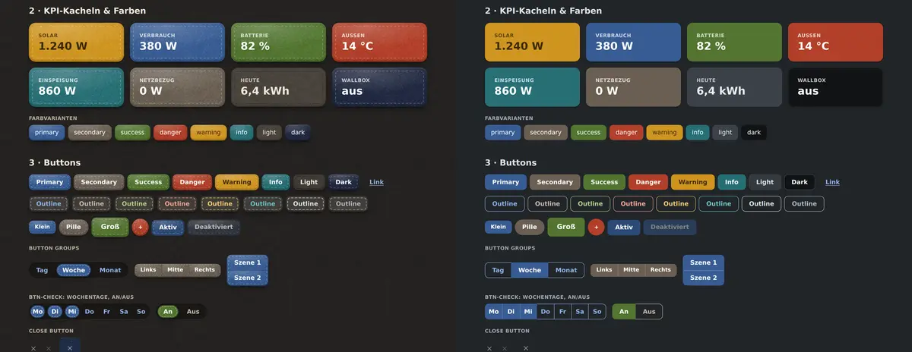

Getting started
Color modes
felt-css supports light and dark color modes just like Bootstrap 5.3 — page-wide or per component, and in both looks. Dark felt is charcoal.
View page source on GitHubOn this page
Dark mode#
Without any attribute, felt-css follows the visitor's system setting (prefers-color-scheme). To pin a mode, set data-bs-theme on the <html> element, exactly like in Bootstrap:
<!doctype html>
<html lang="en" data-bs-theme="dark">
<head>
<meta charset="utf-8">
<meta name="viewport" content="width=device-width, initial-scale=1">
<title>felt-css · dark</title>
<link rel="stylesheet" href="felt.css">
</head>
<body>
…
</body>
</html>Use data-bs-theme="light" to force light mode on a dark system. Light and dark both work with both looks; dark felt is a charcoal sheet with darker, quieter thread.

Per component#
data-bs-theme works on any element, so a part of the page can have its own mode — a dark navbar on a light page, or a light card on a dark one.
<div class="dropdown" data-bs-theme="light">
<button class="btn btn-secondary dropdown-toggle" type="button" id="dropdownMenuButtonLight" data-bs-toggle="dropdown" aria-expanded="false">
Light dropdown
</button>
<ul class="dropdown-menu" aria-labelledby="dropdownMenuButtonLight">
<li><a class="dropdown-item active" href="#">Action</a></li>
<li><a class="dropdown-item" href="#">Action</a></li>
<li><a class="dropdown-item" href="#">Another action</a></li>
<li><a class="dropdown-item" href="#">Something else here</a></li>
<li><hr class="dropdown-divider"></li>
<li><a class="dropdown-item" href="#">Separated link</a></li>
</ul>
</div>
<div class="dropdown" data-bs-theme="dark">
<button class="btn btn-secondary dropdown-toggle" type="button" id="dropdownMenuButtonDark" data-bs-toggle="dropdown" aria-expanded="false">
Dark dropdown
</button>
<ul class="dropdown-menu" aria-labelledby="dropdownMenuButtonDark">
<li><a class="dropdown-item active" href="#">Action</a></li>
<li><a class="dropdown-item" href="#">Action</a></li>
<li><a class="dropdown-item" href="#">Another action</a></li>
<li><a class="dropdown-item" href="#">Something else here</a></li>
<li><hr class="dropdown-divider"></li>
<li><a class="dropdown-item" href="#">Separated link</a></li>
</ul>
</div><nav class="navbar bg-dark" data-bs-theme="dark">
<a class="navbar-brand" href="#">Dark navbar</a>
<ul class="nav nav-pills">
<li class="nav-item"><a class="nav-link active" aria-current="page" href="#">Home</a></li>
<li class="nav-item"><a class="nav-link" href="#">Features</a></li>
<li class="nav-item"><a class="nav-link" href="#">Pricing</a></li>
</ul>
</nav>How it works#
Every colour in felt-css is a custom property written with light-dark(light, dark). The browser picks one side from color-scheme, which is light dark (follow the system) by default and pinned to one value by data-bs-theme. That's why a single attribute re-themes everything below it, including your own CSS if it uses the same tokens:
.my-panel {
background: var(--surface);
color: var(--text);
border: 1px solid var(--border);
}The handful of things light-dark() can't express — felt photos, blend modes, image filters — are switched with [data-bs-theme] selectors inside felt.css; you don't have to do anything for them.
Building a toggle#
felt-css has no theme-switcher JavaScript of its own. A three-way toggle (light, dark, auto) needs only a few lines; this is the one these docs use:
<div class="btn-group btn-group-sm" role="group" aria-label="Color mode">
<input type="radio" class="btn-check" name="theme" id="theme-light" value="light" autocomplete="off">
<label class="btn btn-outline-primary" for="theme-light">Light</label>
<input type="radio" class="btn-check" name="theme" id="theme-dark" value="dark" autocomplete="off">
<label class="btn btn-outline-primary" for="theme-dark">Dark</label>
<input type="radio" class="btn-check" name="theme" id="theme-auto" value="auto" autocomplete="off">
<label class="btn btn-outline-primary" for="theme-auto">Auto</label>
</div>const root = document.documentElement
document.querySelectorAll('input[name=theme]').forEach(radio => {
radio.checked = radio.value === (root.dataset.bsTheme || 'auto')
radio.addEventListener('change', () => {
if (radio.value === 'auto') root.removeAttribute('data-bs-theme')
else root.dataset.bsTheme = radio.value
try { localStorage.setItem('theme', radio.value) } catch {}
})
})Restore the stored value in an inline script in the <head> so the page doesn't flash in the wrong mode.